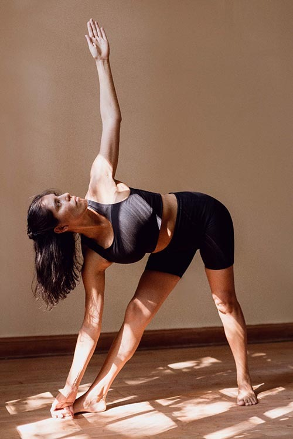
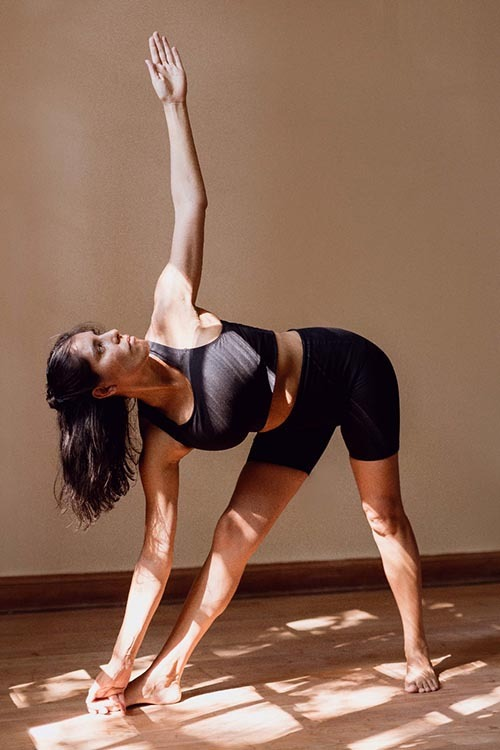

ASHTANGA
El ashtanga yoga nos propone una serie de secuencias de asanas y técnicas de respiración específicas que posibilitan una autopráctica regular donde sea que estés.
Es un estilo intenso, desafiante y dinámico en el que nos movemos de postura a postura junto a cada inhalación y exhalación. De esta manera aprendemos a tomar especial consciencia del cuerpo y descubrimos límites físicos, mentales y emocionales. Esto posibilita saltar miedos e inseguridades y ganar confianza en un camino de autoconocimiento.
El ashtanga yoga nos conecta con nuestra fuerza de voluntad y fomenta la disciplina y el autodescubrimiento a través de la respiración y la observación de nuestro cuerpo.
Es un cable a tierra; una meditación en movimiento.


ACROYOGA
El acroyoga es una práctica grupal en la que se habitan los roles de base, volador y cuidador. En el proceso de aprendizaje-exploración se incorporan herramientas de acrobacias de suelo, yoga y masaje tailandés.
Durante las clases realizamos ejercicios destinados a aprender a confiar en otra persona, ejercicios destinados a confiar en nosotros mismos y ejercicios que habilitan la escucha grupal y el uso del espacio global.
Es una práctica que posibilita la consciencia corporal, el buen uso de la fuerza física y mental, la concentración y el aprendizaje lúdico. Es un proceso en el que cada persona irá avanzando a su propio ritmo.
PROGRESIVO
El yoga progresivo es una práctica multinivel de hatha yoga con herramientas de alineación.
La práctica gira en torno a un objetivo puntual: ir hacia una postura o secuencia pico o entender algún tipo de movimiento en particular.
En el recorrido vamos explorando progresivamente las acciones necesarias y las instancias intermedias que cada cuerpo y cada momento precisen.
Las prácticas son de intensas a intermedias y están orientadas a personas con experiencia previa.
 

VINYASA
En la práctica de vinyasa vamos construyendo clase a clase una secuencia de posturas, hiladas a través de la respiración de manera dinámica.
Se busca internalizar y refinar esa secuencia poco a poco así como también prestar atención a diferentes aspectos, tales como la manera de respirar, la forma de moverse o el alineamiento para intentar luego integrarlos y aplicarlos juntos en la secuencia.
Las prácticas son intensas pero multinivel. Las consignas que siempre están son el ejercicio de la presencia y la observación, la respiración consciente y el movimiento intencionado y certero.